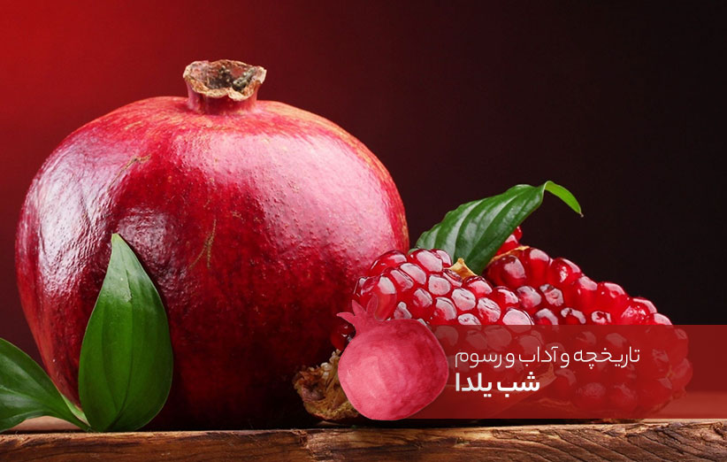

شب یلدا از کا شروع شد؟
شب یلدا یا شب چله یکی از قدیمیترین جشنهای ایرانی است که مثل عید نوروز و چهارشنبهسوری از تاریخ و پیشینهی قدیم ایران به یادگار مانده. این شب از تمام شبهای سال بلندتر است و اجداد ما هر سال آن را جشن میگرفتهاند. شب یلدا در واقع از زمان غروب آفتاب در آخرین روز پاییز یعنی ۳۰ آذر شروع میشود و با طلوع آفتاب در اولین روز زمستان یعنی اول دی به پایان میرسد. زمان شب یلدا به تاریخ میلادی برابر با شب ۲۱ دسامبر است که البته در سالهای کبیسه به ۲۰ دسامبر تغییر میکند. برای مثال تاریخ شب یلدا از سال ۹۶ تا ۹۸ معادل ۲۱ دسامبر بود ولی در سال ۹۹ که کبیسه بود این شب معادل ۲۰ دسامبر ۲۰۲۰ خواهد بود. شب چله بهعنوان بلندترین شب سال، برای ما ایرانیها پر از خاطره است؛ از زمان کودکی که انشای شب یلدا مینوشتیم تا جمع شدن فامیل، انداختن سفره شب یلدا، تزیین انار شب یلدا و گوش دادن به شعر و قصه زیر کرسی.
ریشهشناسی واژه یلدا و چله
یلدا یعنی چه؟
یلدا واژهای سُریانی به معنای زایش و تولد است. سریانی زبانی بود که در میان مسیحیان رواج داشت. این معنا، از بررسی و تحقیق در واژهنامهها و کتابهای تاریخی به دست آمده است. ابوریحان بیرونی، دانشمند همه فن حریف و تقویمشناس، از شب یلدا با نام میلاد اکبر یاد میکند و منظور از این نام را میلاد خورشید دانسته است. کتاب آثار الباقیه نوشته اوست. کتاب به عربی نوشته شده و در حال حاضر، چند ترجمه فارسی از آن منتشر میشود. ابوریحان در این کتاب گاهشماری و تقویم اقوام مختلف را بررسی کرده است. اگر علاقمند باشید میتوانید مراسمات و جشنهای اقوام باستان را در این کتاب مطالعه کنید. دقیقا مشخص نیست که واژه یلدا چه زمان و چطور وارد زبان فارسی شده است. از تاریخ اینطور برمیآید که مسیحیان اولیه که در روم زندگی سختی داشتند و عدهای از آنان به ایران مهاجرت میکنند. به علت نزدیکی فرهنگی، این واژه سریانی به فارسی راه پیدا میکند.
شب چله یعنی چه؟
شب چله در حقیقت همان شب یلدا است. چون از فردای این شب، چله بزرگ زمستان آغاز میشود به آن شب چله میگویند. ایرانیان در زمانهای قدیم، یک نوع تقویم کلی نگر هم داشتند. این تقویم بیشتر در کارهای کشاورزی و دامپروری کاربرد داشت. آنها دو موقع از سال را به نام چله میشناختند. چله تابستان که از تیر شروع میشد و چله زمستان که از دیماه. چلهها هر کدام به دو دوره تقسیم میشدند؛ چله بزرگ و چله کوچک. چهل روز ابتدایی را چله بزرگ و بیست روزِ بعد را چله کوچک مینامیدند. چله بزرگ زمستان که درست بعد از شب یلدا آغاز میشود؛ شروع زمستان است و شدت سرما در آن بیشتر است. چله بزرگ تا دهم بهمن طول میکشد. پس از آن، چله کوچک شروع و تا اول اسفند ادامه دارد. شدت سرما در چله کوچک کمتر است و آسیب کمتری هم میرساند. چهار روز پایان چله بزرگ، و چهار روز آغاز چله کوچک را، چهار چهار میگویند که نهایت شدت سرما در این مدت اتفاق میافتد.